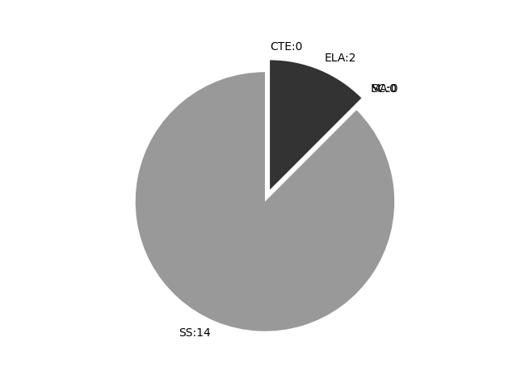

Pennsylvania
Report date: 2021-07-08
The frequency of all keywords found in this state's standards: 16
Comparable state score: 0.606 (median: .303, SD: .324)
The frequency above is the sum of all keywords found in all of this state's four core academic standards and the state's CTE/career standards. This total count is broken down by keyword and discipline area below.
On this site, 'comparable scores' are calculated as: keywords found divided by total words in the standards document(s) - multiplied by 100,000. The comparable scores attempt to normalize data, accounting for very different sizes of curriculum guidance documentation.
Frequencies by keyword or phrase:- spatial: 15
- Geographic Information System: 1
- GIS: 0

Frequencies by discipline area: - SS: 14 (Comparable score: 1.609)
- SC: 0 (Comparable score: 0.0)
- MA: 0 (Comparable score: 0.0)
- ELA: 2 (Comparable score: 0.373)
- CTE: 0 (Comparable score: 0.0)
Review the standards document(s) used in this machine search: external link
Examples of keyword use by discipline area (and document): - ELA
- PA Core ELA Standards.pdf, page:10, position:2461
words and phrases, general academic, and domain-specific words and phrases, including words that including those that including those that including those that signal connections signal spatial and signal precise signal contrast, f: and relat - PA Core ELA Standards.pdf, page:15, position:2790
to texts. responding to texts, words and phrases, words and phrases, phrases1 including including words that including those that including those that those that signal signal connections signal spatial and signal precise contrast, addition, and and re
- SS
- Geography.pdf, page:2, position:1398
that make up the worlds environments and places. These standards build on using geographic tools as a means for asking and answering geographic questions; setting information into a range of spatial contexts; recognizing places and regions as human - Geography.pdf, page:4, position:656
and their uses. Characteristics and purposes of different geographic representations Maps and basic map elements Globes Graphs Diagrams Photographs Geographic representations to display spatial information Sketch maps Thematic maps Mental - Geography.pdf, page:6, position:1257
vegetation, climate, topography) Climate types (e.g., marine west coast, humid continental, tropical wet and dry) A. Explain the physical characteristics of places and regions including spatial patterns of Earth™s physical systems. Climate r - Geography.pdf, page:8, position:798
community Human movement in the local community (e.g., mobility in daily life, migration) A. Describe the human characteristics of places and regions by their population characteristics. Spatial distribution, size, density and demographic char - Geography.pdf, page:9, position:2333
railroads, urban freeways, the development of megalopolis and edge cities) D. Identify the human characteristics of places and regions by their economic activities. Location factors in the spatial distribution of economic activities (e.g., m - Geography.pdf, page:10, position:2345
and public policies that affect geography (e.g., open space, urban development) E. Analyze the significance of human activity in shaping places and regions by their political characteristics: Spatial pattern of political units in the global system - Geography.pdf, page:11, position:1535
adjust to life in hazard-prone areas (e.g., California and earthquakes, Florida and hurricanes, Oklahoma and tornadoes) B. Describe the impacts of people on physical systems. Changing spatial patterns on Earths surface that result from h - Geography.pdf, page:12, position:237
Academic Standards for Geography Ways humans adjust their impact on the habitat (e.g., Endangered Species Act, replacement of wetlands, logging and replanting trees) Spatial effects of activities in one region on another - Geography.pdf, page:16, position:166
- Geography.pdf, page:17, position:601
location and assists in the analysis of distribution patterns. Human features: Tangible and intangible ideas associated with the culture, society and economy of places or areas. These include the spatial arrangement of land uses including transportation - Geography.pdf, page:18, position:1656
urban complex; sometimes referred to as a conurbation. Mental map: A geographic representation which conveys the cognitive image a person has of an area, including knowledge of features and spatial relationships as well as the individuals percept - Geography.pdf, page:22, position:371
Soil: Spatial: Spatial distribution:Spatial organization:Suburbanization:System: Technology: Tectonic plates: Processing of raw and manufactured materials into products with added value. The spatial distribution and arrangement of human habitations - Geography.pdf, page:22, position:178
- Geography.pdf, page:23, position:148